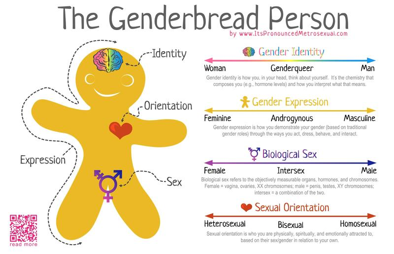

Sexuality and Intersectionality
Week 11
Levi Sands
Get into groups and discuss these questions from fellow classmates
- Sociology seems to have done a successful job at proving the effectiveness of affirmative action, so what is still holding people back? Data does not lie or discriminate so why is there a disconnect?
- The book tells us that the government and other social policies intervene in people’s sexual and reproductive decision making. Do you think the government should we allowed to create laws surrounding this topic?
- There is a prominent double standard for guys versus girls in the “hookup” world. When men have sex with other girls they are called players, but women are called hoes, sluts, skanks, etc. How can society work to change these double standards, and expect the same out of men and women?
Late Work
- I will be accepting late work through December 13th
- If you have any late work for anything that is worth 10 points send me an email (section number in the subject line) with the missing assignment by the 13th for up to half credit
- I will not be accepting any late work for any of those assignments after that date

Extra Credit Opportunity
- Details will be on ICON/Canvas
- Worth 5 pts (maybe more)
- You will have to listen to two podcasts and answer a series of questions regarding what you heard
- Due Dec 1st I will NOT accept them after that time
Good Sex vs Bad Sex
Source: Boundless.com Socialization and Human Sexuality
- Western Cultures adhere to the idea of heteronormativity
- The view that all human beings are either male or female, both in sex and in gender, and that sexual and romantic thoughts and relations are normal only when between people of different sexes.
- Religion, the law, and the media are the three primary agents of socialization that teach people how to behave sexually
- There is a lot of variability across cultures when it comes to sexual norms and practices


Example
- Personal example from Reddit

Discussion
- Colorado case of cake makers not making a cake for a gay couple due to religious beliefs
- Should companies be allowed to choose their clientele even if that would mean that there would be discrimination?
Intersectionality
- “Theory that suggests we cannot separate the effects of race, class, gender, sexual orientation, and other attributes” (OpenStax College 2012).
- Example Black Women


Questions
- How does intersectionality affect you?
- How can the stress of being in a minority group affect individuals over time?
- What other groups not mentioned yet might be susceptible to discrimination?
- What can be done about this?
Group Activity
In your group write down answers to the following questions
- Describe 5 obstacles preventing an individual with multiple intersectionality disadvantages from being successful economically.
Themes
reveal.js comes with a few themes built in:
Black (default) -
White -
League -
Sky -
Beige -
Simple
Serif -
Blood -
Night -
Moon -
Solarized
Themes created by Levi Sands
Udub -
USU -
Uiowa -
Gonzaga -
EWU